CS184/284A Fall 2026 Homework 1 Write-Up
Link to webpage: https://cal-cs184-student.github.io/hw1-deadline-enjoyers-writeup/
Link to GitHub repository: https://github.com/cal-cs184-student/hw1-deadline-enjoyers
Overview
In this homework we built a complete software rasterizer for 2D vector graphics. Starting from a single-color triangle rasterizer (Task 1), we added grid supersampling for antialiasing (Task 2), the SVG affine transforms used to assemble the cubeman (Task 3), barycentric color interpolation (Task 4), texture mapping with nearest and bilinear pixel sampling (Task 5), and mip level sampling with trilinear filtering (Task 6). We also implemented an extra-credit GUI feature: two keys that rotate the viewport.
The thread that ties everything together is the edge function. Writing the triangle's three edges as \(E_i(x,y) = (x - x_i)\,\Delta y_i - (y - y_i)\,\Delta x_i\), a sample is inside the triangle when all three have the same sign, and the same three values, divided by the triangle's area, are the barycentric coordinates. That one quantity therefore decides coverage (Task 1), how many samples a pixel gets (Task 2), how color is blended across the triangle (Task 4), which (u,v) a textured triangle reads (Task 5) and which mip level that (u,v) needs (Task 6).
Things we found interesting along the way: the choice of what to do with a sample that lands exactly on an edge is not a detail - it decides whether neighbouring triangles leave seams or double-cover pixels; supersampling, pixel sampling and level sampling fix three genuinely different kinds of aliasing; and the last bit of the floating point arithmetic is visible in a byte-exact comparison of the reference images (see the notes at the end).
Task 1: Drawing Single-Color Triangles
How we rasterize a triangle
- Compute twice the signed area \(A = (x_1-x_0)(y_2-y_0) - (x_2-x_0)(y_1-y_0)\). If it is zero the triangle is degenerate and we return immediately.
- Clip the triangle's bounding box to the framebuffer:
min/max of the three vertices, clamped to [0, width-1] x [0, height-1]. - For every pixel in that box, and for every sample inside the pixel (one sample, at the pixel center, when the sample rate is 1), evaluate the three edge functions \(E_0, E_1, E_2\). The sample is filled when all three are inside.
- Write the color into the sample buffer at
((y*width + x) * sample_rate) + sy * sqrt(rate) + sx.
A sample that lies exactly on an edge is the interesting case. We implement the OpenGL top-left rule, where only "top edges (horizontal, interior below) and "left" edges (interior to the right) accept their boundary. Then every sample belongs to exactly one triangle, so the image no longer depends on the order in which triangles are drawn - at the price of differing from the reference images at those few boundary pixels.
Why this is no worse than checking every sample in the bounding box
The algorithm is a bounding-box traversal, so its cost is bounded by the area of the box, exactly like the naive version - but it never does more work than that, and it avoids several kinds of useless work:
- the loop bounds are the minimum axis-aligned box that contains the triangle, so no sample outside the triangle's box is ever tested;
- the box is intersected with the screen, so pixels off-screen (or a triangle entirely off-screen) cost nothing;
- degenerate (zero-area) triangles return before any loop is entered;
- per sample the test is a constant amount of work (three edge functions and a sign test), and the edge functions are evaluated from precomputed per-edge deltas, so there is no per-sample setup.
In other words the runtime is \(\Theta(\text{bbox area} \times \text{samples per pixel})\) with the smallest constant we could manage while still testing exactly the candidate samples.

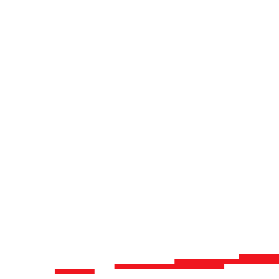
Task 2: Antialiasing by Supersampling
Data structures and pipeline changes
The rasterizer no longer writes pixels directly. It keeps a sample buffer,
std::vector<Color> of size width * height * sample_rate, where
pixel \((x,y)\) owns the sample_rate entries starting at
(y*width + x) * sample_rate. With \(\sqrt{\text{rate}} \times \sqrt{\text{rate}}\)
samples per pixel the buffer is exactly a higher resolution image, and a sample is stored at
sy * sqrt(rate) + sx inside its pixel. The buffer is resized when the framebuffer
is resized and when the sample rate changes, and it is cleared (to white) at the start of every
frame.
The three pieces of the pipeline that changed are:
rasterize_triangle()now tests the \(\sqrt{\text{rate}}^2\) sample positions \(x + (sx+0.5)/s, \; y + (sy+0.5)/s\) inside each pixel of the bounding box and fills the matching entry of the sample buffer, instead of one pixel center;fill_pixel()(used by points and lines, which are not supersampled) fills all samples of a pixel with the same color, so that resolving the buffer gives that color back exactly - this is what keeps the black canvas border crisp;resolve_to_framebuffer()averages the samples of each pixel (a box filter) and converts the result to the 8-bit framebuffer. The samples are summed in double precision: summing them in floats drifts by about 1/255 and visibly darkens flat, fully covered areas at high sample rates.
Why supersampling is useful, and what we observe
A pixel that is only partially covered by a triangle should be shaded with the fraction of the pixel the triangle actually covers. With one sample per pixel the coverage is binary: the pixel takes the triangle's color or the background's, which is exactly what produces the "staircase" edges and the broken thin sliver in the Task 1 detail image. With \(n\) samples the resolved color is \(\sum_i c_i / n\), so the coverage is quantized into \(n+1\) levels and the edge intensity varies smoothly instead of jumping.
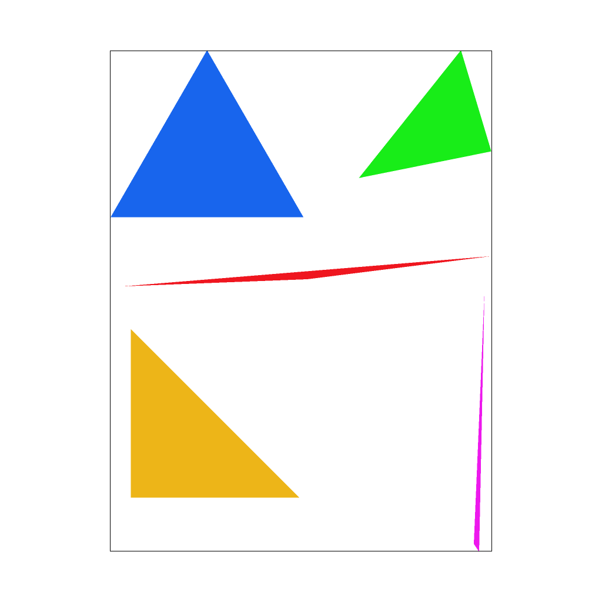 |
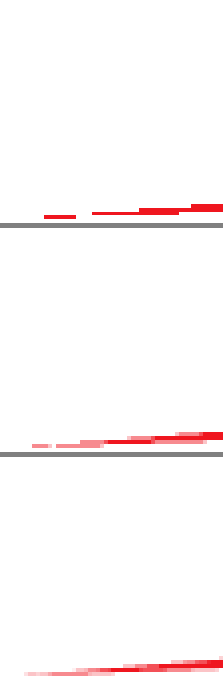
The reason the highest rate looks best on this feature is that the sliver is thinner than one pixel over most of its length: whether a single center sample lands inside is almost a coin flip, which is why the rate-1 image breaks into dashes. Sixteen samples estimate the coverage to within 1/16 of a pixel, so the same feature resolves into a continuous, correctly weighted band. Cost scales with the sample rate (16x the sample tests and 16x the memory in our layout for a 4x4 grid), which is why the GUI only offers 1, 4, 9 and 16.
Task 3: Transforms
The three matrices
The transforms are the standard homogeneous 2D matrices from the SVG specification; the third
column of our Matrix3x3 carries the translation, and
operator*(Matrix3x3, Vector2D) lifts the point to \((x, y, 1)\) and divides by
\(w\):
$$ \text{translate}(t_x,t_y) = \begin{bmatrix}1&0&t_x\\0&1&t_y\\0&0&1\end{bmatrix}, \quad \text{scale}(s_x,s_y) = \begin{bmatrix}s_x&0&0\\0&s_y&0\\0&0&1\end{bmatrix}, \quad \text{rotate}(\theta) = \begin{bmatrix}\cos\theta&-\sin\theta&0\\\sin\theta&\cos\theta&0\\0&0&1\end{bmatrix} $$
rotate is counterclockwise in a y-up frame, which is how the SVG spec defines it;
because y points down on the screen, a positive angle therefore appears clockwise on the
display. Groups compose hierarchically as global = global * transform, so a child's
coordinates are interpreted in its parent's frame - that is what lets
translate(250 250) -> translate(0 -100) -> rotate(45) -> scale(.5 .5)
build the diamond-shaped head out of the same unit square used for every limb.
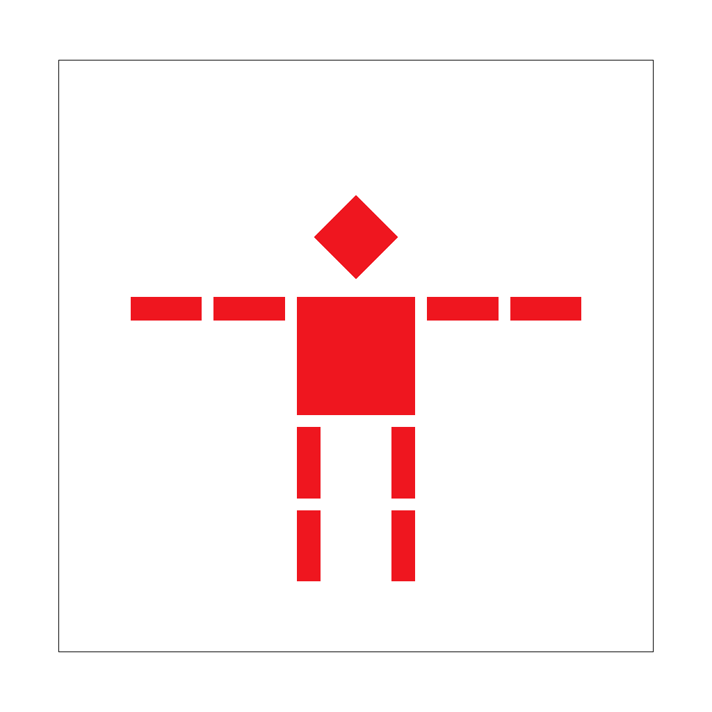
my_robot.svg: cubeman waves
To play with the transforms we modified a copy of the cubeman (docs/my_robot.svg):
the left arm group is rotated by 70 degrees about the shoulder with the elbow bent another 20
degrees, so the arm is raised in a wave, the head is tinted amber and tilted by -15 degrees,
the rear leg is stepped out and the swing arm hangs slightly lower. Nothing else changed - the
whole pose is produced by the same rotate/scale/translate matrices we implemented.
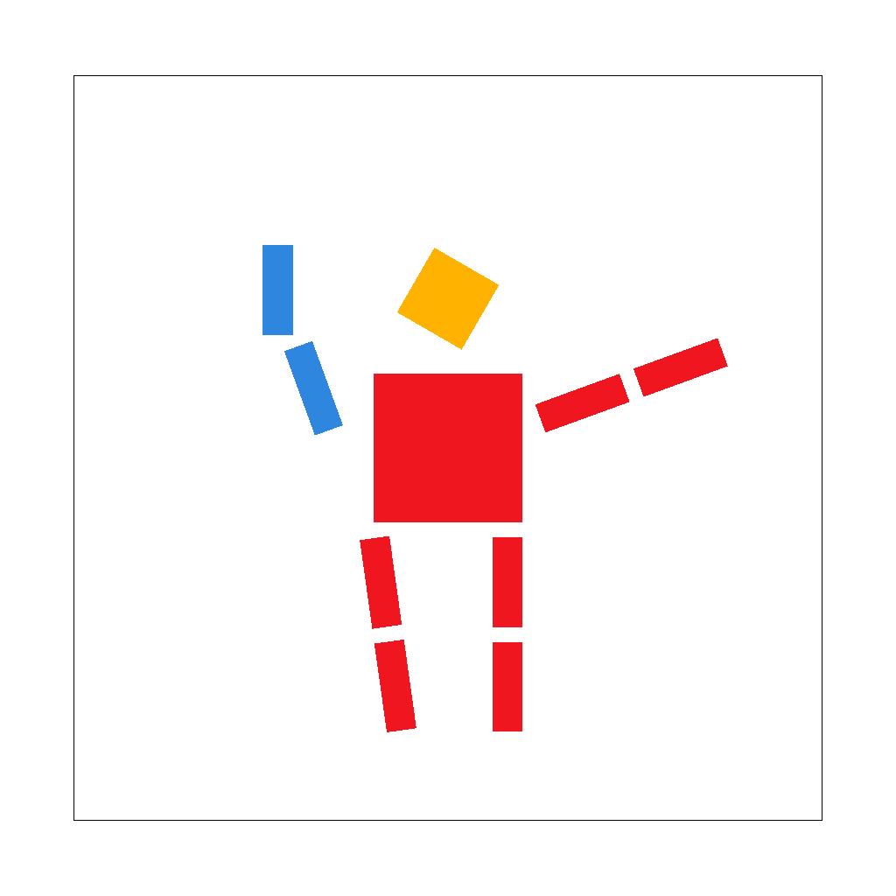

Extra credit: rotating the viewport with two keys
Pressing [ and ] rotates the viewport by 5 degrees per press (counterclockwise and clockwise on screen); the existing reset-view key (space) also clears the rotation. The implementation only touches the SVG->NDC -> screen matrix stack: the NDC-to-screen transform is now rebuilt by a helper as
$$ M_{\text{ndc}\rightarrow\text{screen}} = T(c)\,R(\theta)\,T(-c)\;\cdot\;S_{\text{fit}}, $$
i.e. the usual fit (scale the canvas into the window and centre it) followed by a rotation about the centre of the window \(c\). Because the rotation sits in the NDC-to-screen stage, which is applied after the SVG-to-NDC view transform, dragging and scrolling still pan and zoom in SVG space (only now in the rotated frame), and resizing the window keeps the angle (and rotates about the new centre). Everything drawn - the scene and the canvas outline - goes through this one matrix, so they rotate together.
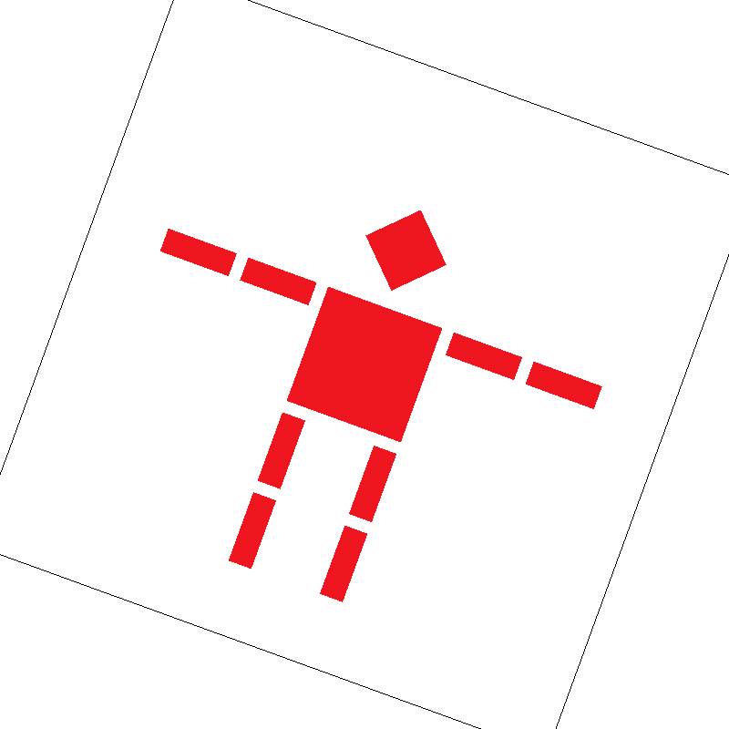
Task 4: Barycentric coordinates
Barycentric coordinates express a point \(P\) inside a triangle as a weighted average of its three vertices: \(P = \alpha P_0 + \beta P_1 + \gamma P_2\) with \(\alpha + \beta + \gamma = 1\). Geometrically each weight is an area ratio: \(\alpha\) is the area of the sub-triangle \(PP_1P_2\) divided by the area of \(P_0P_1P_2\), and so on. That makes them the natural way to spread any value that is given at the three corners - here the colors - across the triangle: a point exactly at vertex 0 has \(\alpha = 1\) and takes exactly that vertex's color, a point on an edge mixes the two edge vertices, and the middle of the triangle is an even blend.
The nice part is that we get the weights for free from the edge functions we already evaluate for coverage: the edge function of the edge opposite vertex 0 measures twice the area of \(PP_1P_2\), so \(\alpha = E_1/A\), \(\beta = E_2/A\), \(\gamma = E_0/A\) with \(A = E_0+E_1+E_2\). They are non-negative exactly when the sample is inside the triangle, so coverage and interpolation are the same computation. The interpolated color is \(c = \alpha c_0 + \beta c_1 + \gamma c_2\).
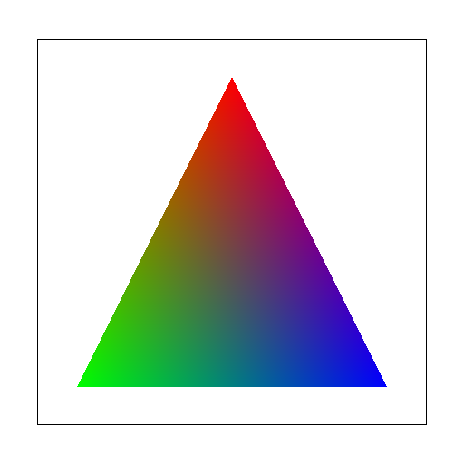
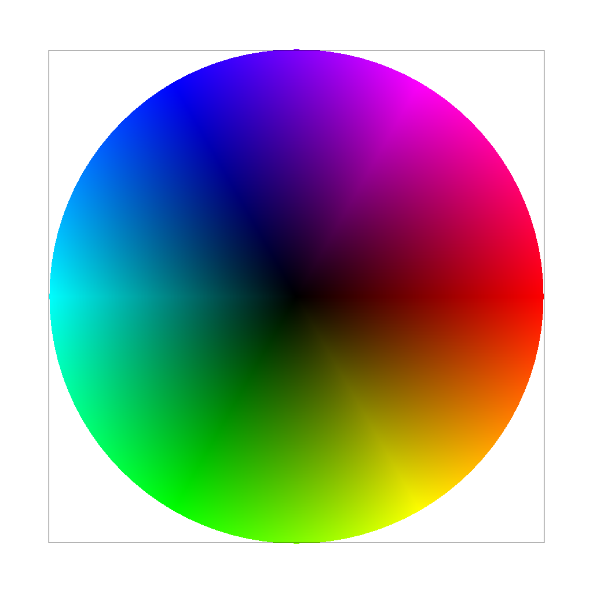
Task 5: "Pixel sampling" for texture mapping
What we implemented
For a textured triangle we interpolate (u,v) with the same barycentric weights used for the coordinates, and then ask the texture for the color at that (u,v). The texture coordinates address the centers of the texels: texel \(i\) of a texture \(N\) texels wide sits at \(u = i/(N-1)\), so \(u \cdot (N-1)\) is a position in "texel space". Both samplers use that mapping:
- Nearest (
P_NEAREST): round the position to the closest texel and return that one texel. One fetch, no arithmetic on colors - but constant color inside a texel, so magnified textures look blocky and minified ones alias. - Bilinear (
P_LINEAR): take the four texels around the position and blend them with the fractional part of the position (a lerp along x in both rows, then a lerp along y between the two rows). Four fetches and three lerps; the result is continuous, so magnification looks smooth and minification is slightly less noisy.
Both clamp the texel indices, so (u,v) outside [0,1] replicates the border texels instead of reading out of bounds. The pixel sampler is selected with the P key in the GUI.
Nearest vs. bilinear
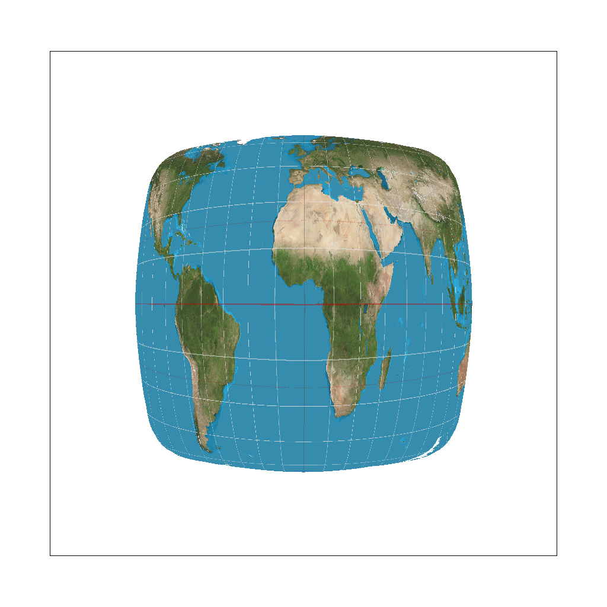 |
|
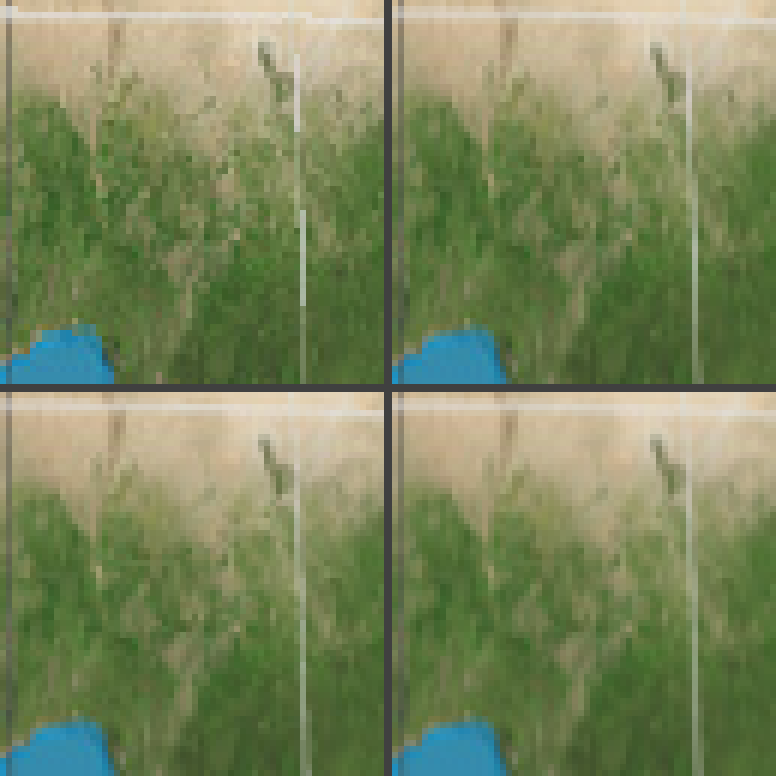
The two samplers look alike where the texture is smooth and differ most where the texture has high-frequency detail relative to the pixel footprint - coastlines, thin lines, high contrast edges. Bilinear costs about four times as much texture bandwidth as nearest (four texel reads plus three lerps versus one read), which is the usual trade for smoother magnification. Increasing the number of samples per pixel does not help here: supersampling only makes the geometry edges smoother, the texel grid inside the triangle is untouched. That is a different problem, and it is what Task 6 addresses.
Task 6: "Level sampling" with mipmaps for texture mapping
Choosing the mip level
When a texture is minified, many texels fall inside one pixel; point-sampling one of them
produces the shimmering aliasing known as the moire pattern. Level sampling fixes this by
sampling a lower resolution version of the texture whose texels are roughly the size of
a pixel - the mipmap chain that generate_mips() builds by successive halving.
To decide which level to use we need to know how fast (u,v) changes across one pixel. For every
sample we evaluate the barycentric interpolation not only at the sample position \((x,y)\)
but also at \((x+1,y)\) and \((x,y+1)\) - cheap, because moving one
pixel in x lowers an edge function by that edge's \(\Delta y\) and moving in y raises it by
\(\Delta x\) - and store the three uv values in the SampleParams as
p_uv, p_dx_uv and p_dy_uv. get_level()
then forms the differences, scales them by the full resolution texture size to get a footprint
in texels, and returns
$$ L = \log_2 \max\!\left(\left\| \frac{\partial (u,v)}{\partial x} \right\|,\, \left\| \frac{\partial (u,v)}{\partial y} \right\| \right) , $$
clamped to [0, #levels-1] (a footprint under one texel means the texture is magnified, so
level 0 is used). Texture::sample interprets the level according to the level
sampler selected with the L key:
- L_ZERO: always level 0 (full resolution) - what Task 5 did;
- L_NEAREST: round \(L\) and sample that one level;
- L_LINEAR: sample the two levels around \(L\) and blend them with the fractional
part. Combined with
P_LINEARthis is trilinear filtering: a bilinear sample from each of two mip levels, blended.
For this part we used our own picture (picture.png, a color wheel).
That scene maps the whole texture onto a warped square, so the
texel density - and with it the ideal mip level - varies strongly across a single frame.
Results
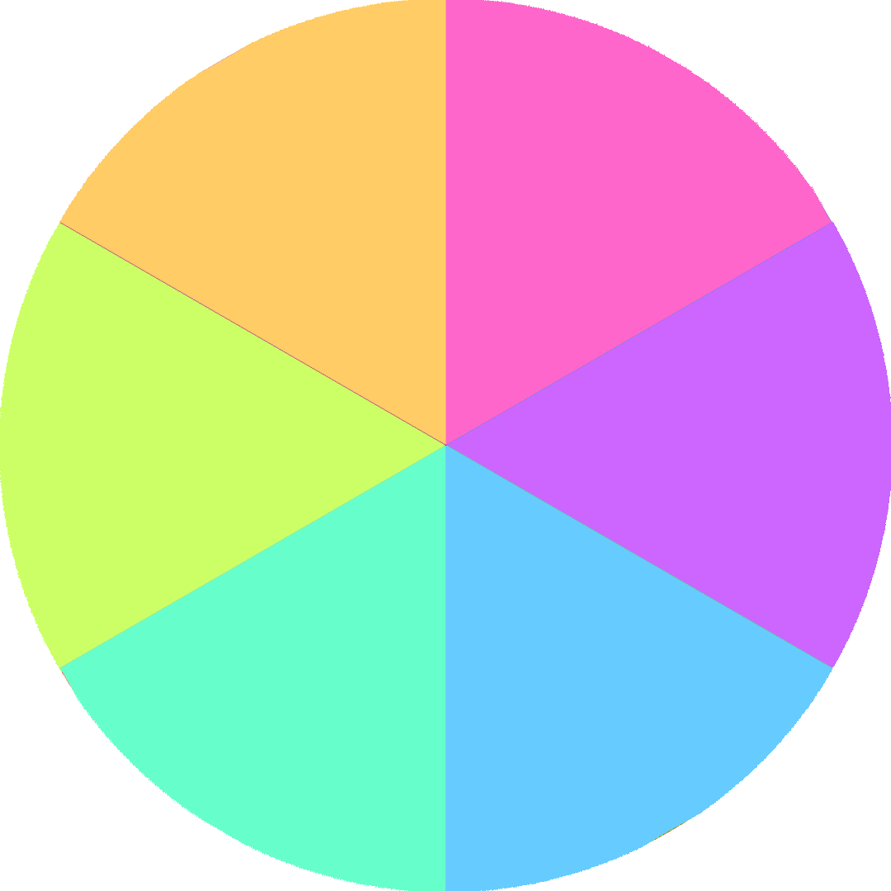
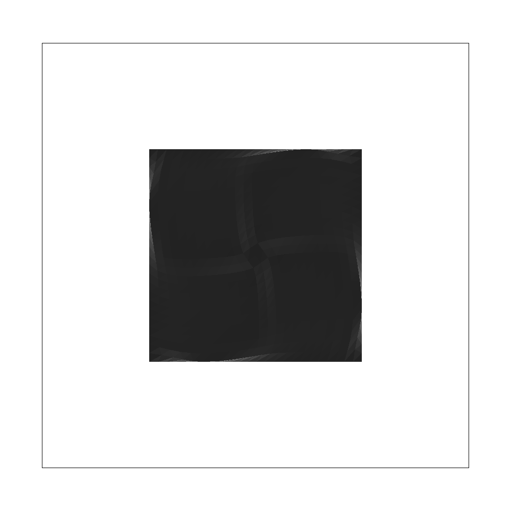
get_level(): each texel is shaded by the mip level it selects
(lighter = coarser level). The warped mesh of test2 squeezes very different amounts of
texture into one pixel, so the level changes across the frame and peaks where the
distortion compresses the texture the most.
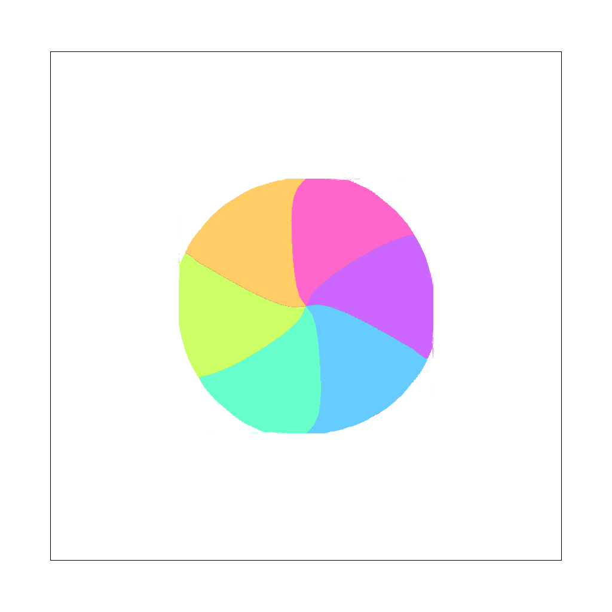 |
svg/texmap/test2.svg with our picture as its texture,
rendered with the four combinations of level and pixel sampler (1024x1024, sample rate 1).
L_ZERO leaves the sector seams dotted and jagged where the distortion compresses the
texture; L_NEAREST removes that shimmer, and P_LINEAR additionally smooths the texels
within each level.
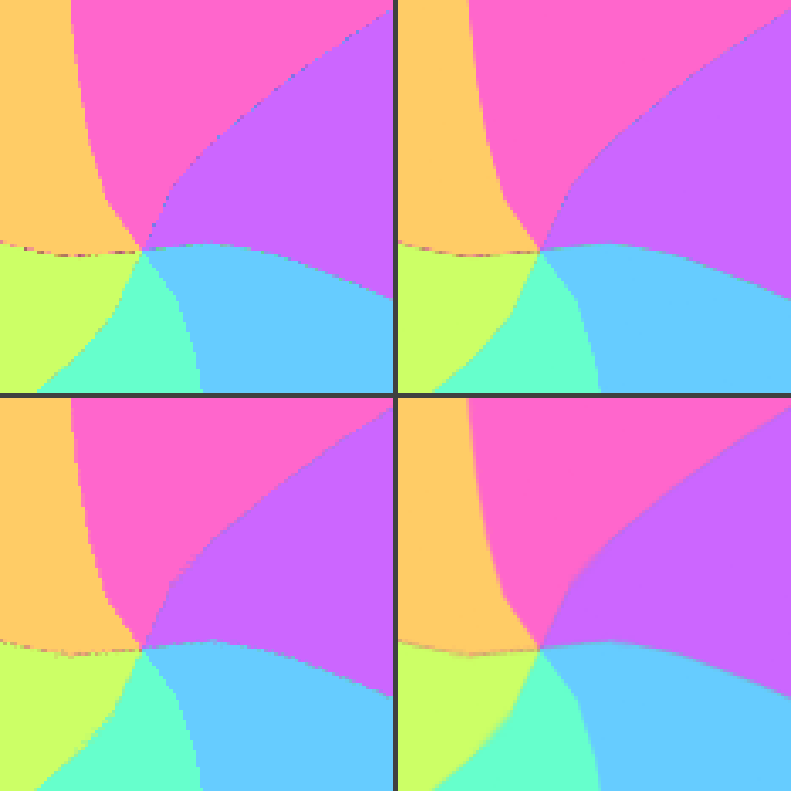
Tradeoffs between the three knobs
| Technique | What it fixes | Cost |
|---|---|---|
| Supersampling (1, 4, 9, 16 samples/pixel) | Aliasing of geometry edges, including features thinner than a pixel. 16 samples give 17 coverage levels. | Time and memory scale linearly with the sample rate (16x for a 4x4 grid); the extra cost applies to the whole image, not just the edges. |
| Pixel sampling (P_NEAREST, P_LINEAR) | The reconstruction inside one mip level: nearest is blocky and noisy when magnified, bilinear is continuous. | Nearest is one texel fetch; bilinear is four fetches and three lerps. No extra memory. |
| Level sampling (L_ZERO, L_NEAREST, L_LINEAR) | Aliasing caused by minification (a pixel covering many texels), which neither of the other two can fix. | ~33% more texture memory for the mip chain. L_NEAREST costs the same as L_ZERO (one level fetched); L_LINEAR doubles the texture work (two levels fetched and blended). |
In practice we ended up using 16 samples per pixel + P_LINEAR + L_LINEAR whenever quality matters, and falling back to 1 sample + P_NEAREST + L_ZERO when the cost matters - the knobs are independent, so the cheap setting is also the default.
Extra Credit
- Rotating the viewport with the keyboard (Task 3 extra credit): implemented with the [ and ] keys and described above.
We did not attempt the other optional extras (timing table for Task 1 optimizations, alternative antialiasing for Task 2, anisotropic filtering for Task 6).